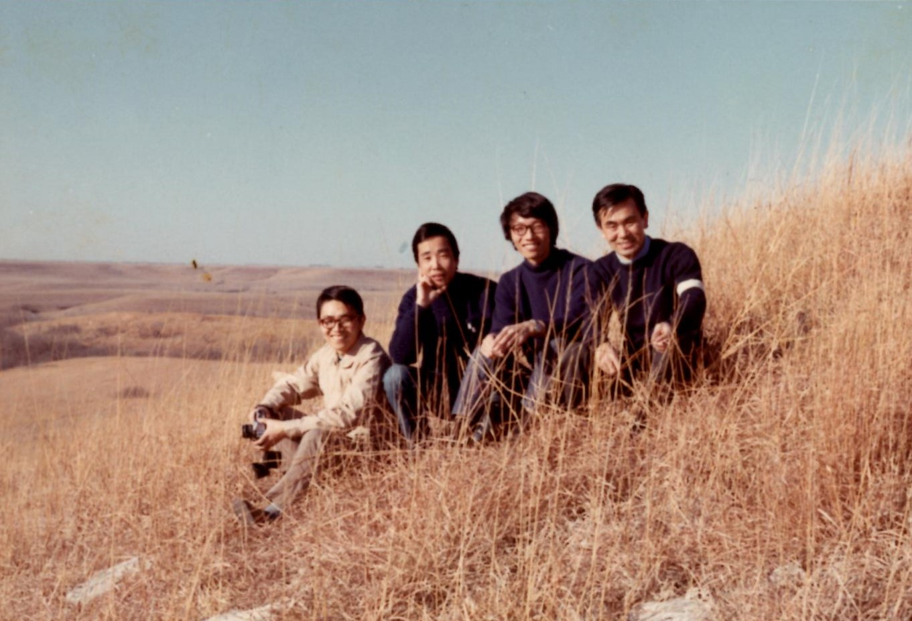

My Family
My grandfather came to America to pursue his dreams as a scientist,
he came to America to get his PhD. At the time my grandparents came
it was during the 60s mainly known as the Civil Rights Movement era
so they were discriminated. Due to that, my grandfather could not
chose which school he wanted to get his PhD in and instead it was
already decided. The college was in Kansas. I mean Kansas out of
all places. That had to live in terrible conditions.
I am not exaggerating. Literally one of the places they rented to
stay was infested with bugs and they couldn’t afford to have a
person to exterminate them. Even though they save up money for the
trip and stay in America, they were only allowed to bring a
maximum of about 200 dollars. That is so little. Think about it--
you only have 200 dollars to pay for food, clothing, an apartment,
tuition for school, etc. You are barely living.
Turns out every month they had only 1 cent of spare money.
But to my grandparents it was worth everything. Thanks to their
hard work and perseverance, my grandfather did get his PhD.
Sadly, however my grandmother was super close to getting her PhD
in Japan but had to live to go to America. Her main dream
never came true even after they had a better life and had
my dad and aunt.
Including me there are 4 people in my family. My mom, my dad,
my younger brother, and me. We live in a nice house it includes
three bedrooms, a front yard, and back yard.
